Data visualization for linguists
Joseph V. Casillas | Rutgers University
14th Pronunciation in Second Langauge Learning and Teaching
Purdue University
2023-09-06
Follow along
How to use this workshop
Do you know R?
Yes
- Follow along, do examples
- Watch
- Both (as attention allows)
No
- Watch
- Come back when time and resources allow
Goals
make elegant, truthful plots
Goals
make elegant, truthful plots
help reader understand data
Goals
make elegant, truthful plots
help reader understand data
make process repeatable, shareable
Goals (today)
get you started making elegant, truthful plots
Goals (today)
get you started making elegant, truthful plots
discuss pitfalls, bad practices
Goals (today)
get you started making elegant, truthful plots
discuss pitfalls, bad practices
provide resources to help you continue learning
Just use a table…
the data speaks for itself
“Stats don’t lie, but liars use stats”
(same idea)
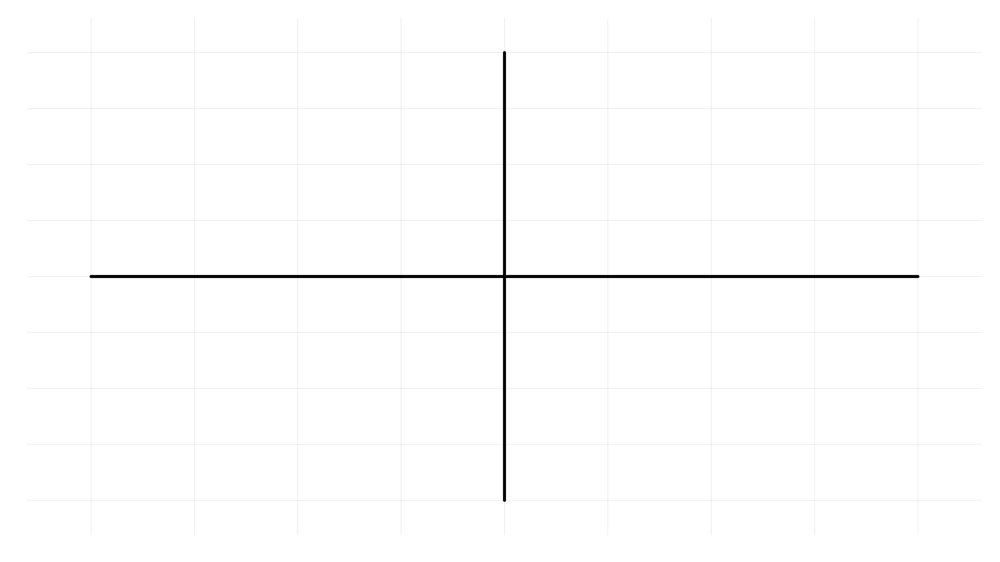
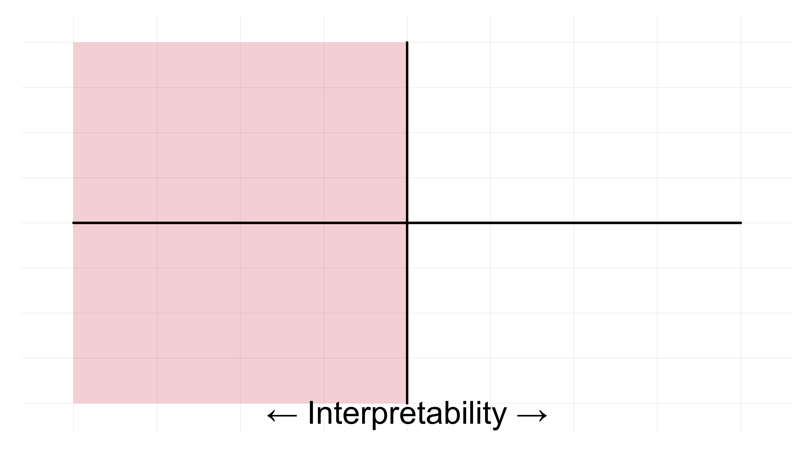
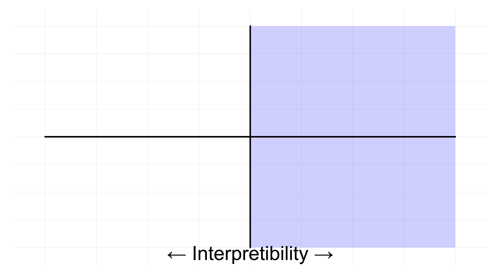
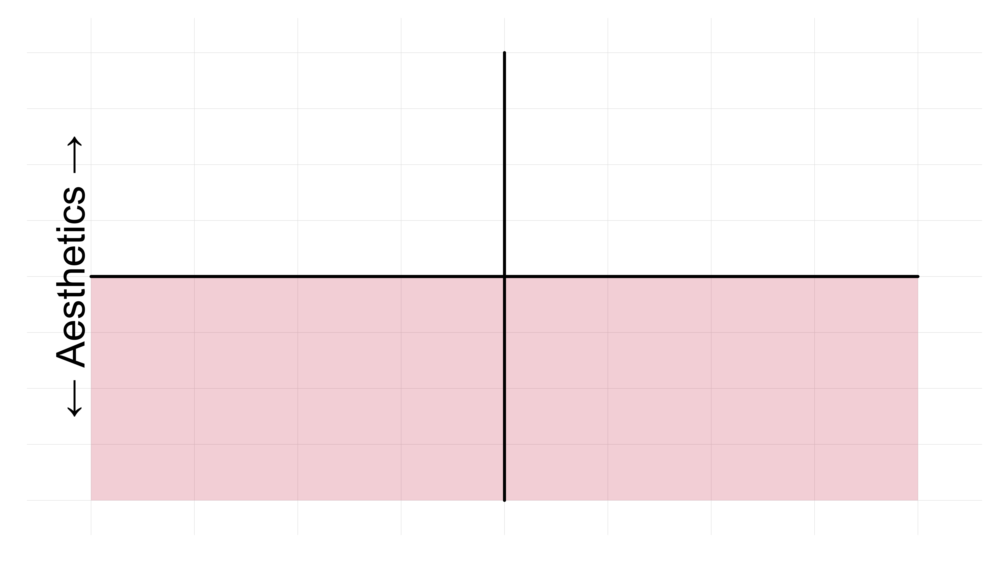
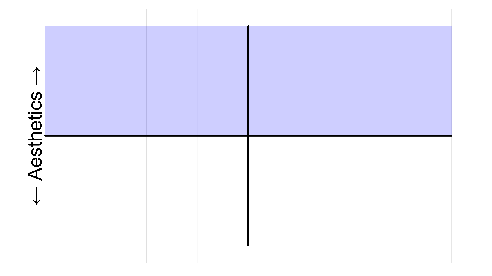
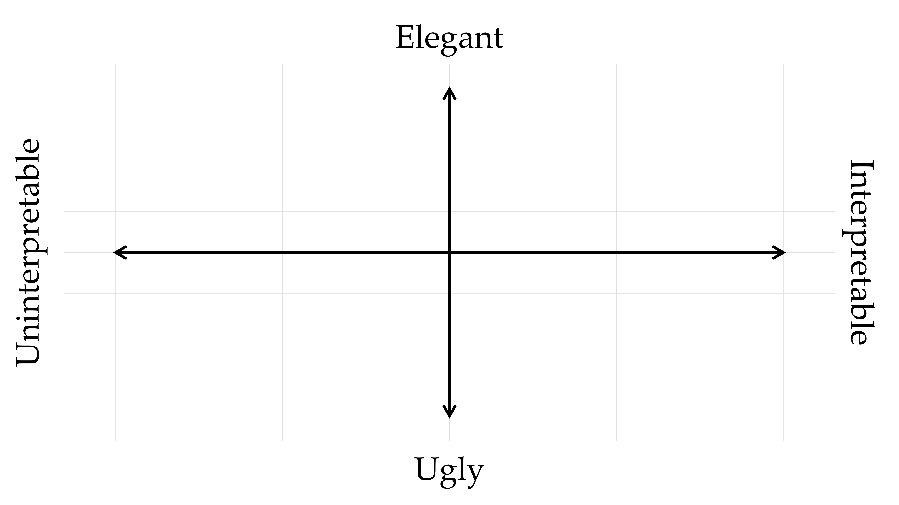
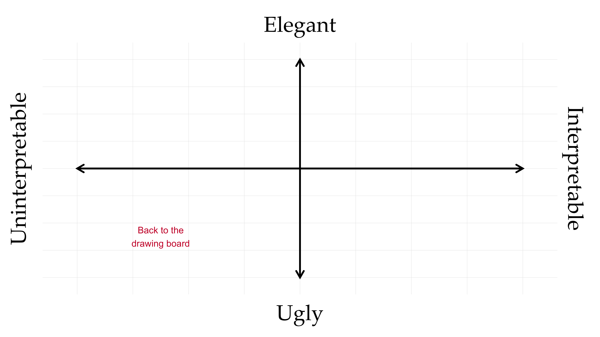
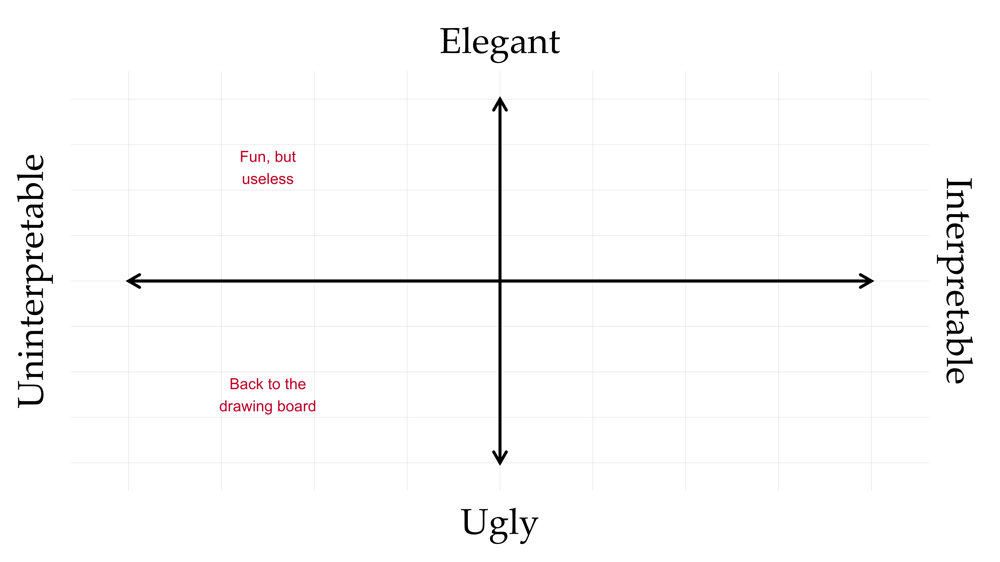
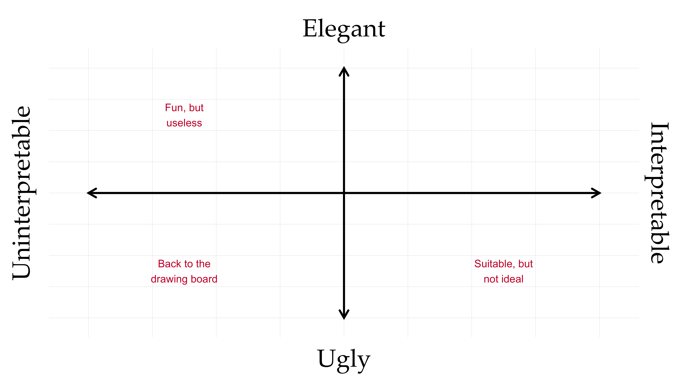
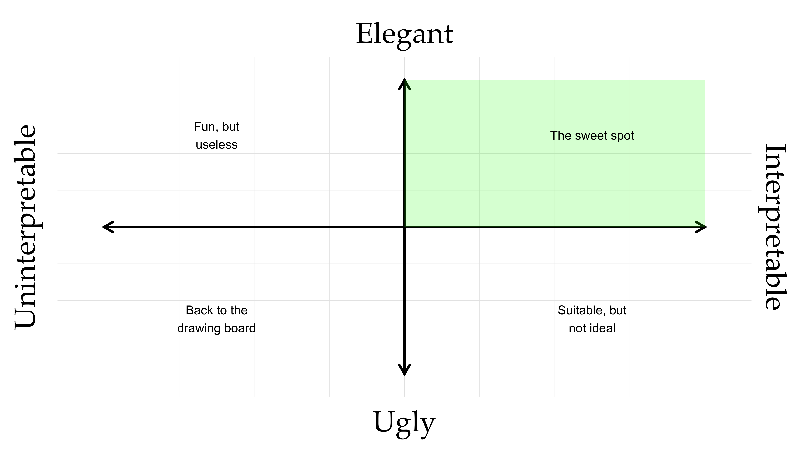
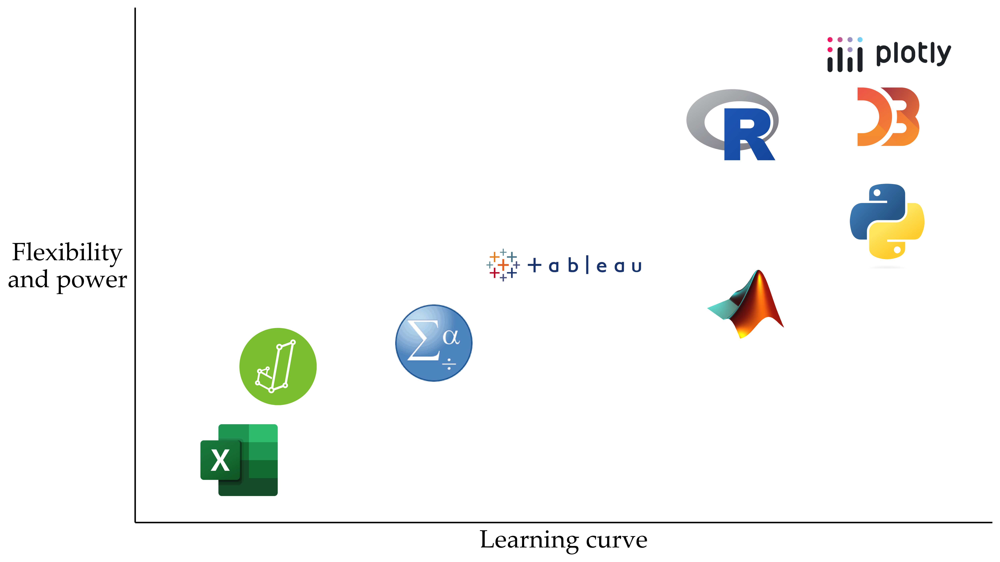
ugliest plot in the world
principles of graphic design - CRAP (contrast, alignment, repetition, proximity) - Contrast: two things aren’t the same, then make them very different - fonts (family, weight, size), colors (complex, accessibility for color blindness, color.adobe.com), shapes - Repetition: repeat things throughout doc, pres., etc. - colors palettes, fonts (families, weights, sizes), other graphical elements (alignments, etc.) - Alignment: everything on page/screen/plot has visual connection with something else on page/screen/plot - use guidelines to check - Proximity: group related items together - less applicable to dataviz - learnable, takes practice
common types of plots
pie charts bar graphs historgrams, density plots boxplots scatterplots heatmaps etc.
principles of grammar of graphics - map data to aesthetics
GoG applied, ggplot2 data aesthetics geoms scales facets coordinates labels theme
good principles (remember crap) colors highlight important things help audience (reader)
bad principles
practical examples take a bad plot and make it better
Helpful resources
- https://datavizf23.classes.andrewheiss.com/syllabus.html
- Alberto Cairo, The Truthful Art: Data, Charts, and Maps for Communication (Berkeley, California: New Riders, 2016).
- Kieran Healy, Data Visualization: A Practical Introduction (Princeton: Princeton University Press, 2018), http://socviz.co/
- Claus E. Wilke, Fundamentals of Data Visualization (Sebastopol, California: O’Reilly Media, 2018), https://serialmentor.com/dataviz/